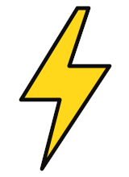

Always-on
Your social and creative team on tap. Strategy, content and community every month, with a proper review of what worked.
- Monthly content plan
- Production days
- Community & reporting

Three engines, one studio. We make brands impossible to scroll past — then build the systems that keep people there.

02
Taste is a strategy. We give brands a point of view — then make sure every frame agrees with it.
From brand worlds and campaign concepts to art direction on set, we shape how a brand looks, sounds and behaves, online and off. Big ideas, sweated details, nothing beige.
03
Your brand, awake 24/7 — answering, creating and selling in its own voice.
We design and build custom AI agents: concierge agents that look after customers, content engines that draft and schedule, listeners that read every comment, and copilots for your team. Built by a creative studio, so they actually sound like you.
Explore AI agentsEvery project — a launch, an always-on retainer or an agent build — runs the same six tracks. Hit play.
01 — Listen
We audit the feed, the brand, the audience and the competition.
Your social and creative team on tap. Strategy, content and community every month, with a proper review of what worked.
One big moment, done properly. Concept, production and rollout for a launch, a drop or a campaign.
Discovery, design and build of a custom AI agent — then we stay close and tune it once it’s live.
No. We work with brands that want to be talked about — from first-time founders to established names. If the ambition is big, we’re in.
That’s the whole point. The same team that knows your voice on social builds the agent that speaks for you in DMs, on WhatsApp or on your website.
With a call and a feed teardown. We look at where you are and where you want to be, then tell you honestly what it will take.
We watch real conversations, tune the prompts and knowledge, and keep improving it. Agents get better with use — we stay close while they learn.
It depends on scope. Tell us what you need and we’ll come back with clear options — no mystery maths.
01
Social media marketing
Feeds that feel like a channel worth following — not a brand talking to itself.
We run social like a newsroom with taste: strategy, calendars, content, community and paid, all under one roof and all in your voice. Every post has to earn its place in the grid, and every week we learn what’s working and double down on it.
What’s inside